소방설비산업기사(기계) (2017-05-07 기출문제)
1과목: 소방원론
1. 제3류 위험물의 물리, 화학적 성질에 대한 설명 중 옳은 것은?
- 화재 시 황린을 제외하고 물로 소화하면 위험성이 증가한다.
- 황린을 제외한 모든 물질들은 물과 반응하여 가연성의 수소기체를 발생한다.
- 모두 분자내부에 산소를 갖고 있다.
- 모두 액체상태의 화합물이다.
(정답률: 62%)

2. 다음 물질 중 연소범위가 가장 넓은 것은?
- 아세틸렌
- 메탄
- 프로판
- 에탄
(정답률: 75%)
3. 감광계수에 따른 가시거리 및 상황에 대한 설명으로 틀린 것은?
- 감광계구 0.1m-1 는 연기감지기가 작동할 정도의 연기농도이고, 가시거리는 10~30m이다.
- 감광계수 0.5m-1 는 거의 앞이 보이지 않을 정도의 농도이고, 가시거리는 1~2m이다.
- 감광계수 10m-1 는 화재최성기 때의 연기 농도를 나타낸다.
- 감광계수 30m-1 는 출화실에서 연기가 분출할 때의 농도이다.
(정답률: 62%)
4. 피난시설의 안전구획 중 2차 안전구획으로 옳은 것은?
- 거실
- 복도
- 계단전실
- 계단
(정답률: 66%)
5. 연료설비의 착화방지 대책 중 틀린 것은?
- 누설연료의 확산방지 및 제한 - 방유제
- 가연성 혼합기체의 형성 방지 - 환기
- 착화원 배제 - 연료 가열시 간접 가열
- 정전기 발생 억제 - 비금속 배관 사용
(정답률: 69%)
6. 물의 주수 형태에 대한 설명으로 틀린 것은?
- 일반적으로 적상은 고압으로, 무상은 저압으로 방수할 때 나타난다.
- 물을 무상으로 분무하면 비점이 높은 중 질유 화재에도 사용할 수 있다.
- 스프링클러소화설비 헤드의 주수 형태를 적상이라 하며 일반적으로 실내 고체 가연물의 화재에 사용한다.
- 막대 모양 굵은 물줄기의 소방용 방수노즐을 이용한 주수 형태를 봉상이라고 하며 일반 고체가연물의 화재에 주로 사용한다.
(정답률: 55%)
7. 단백포 소화약제의 안정제로 철염을 첨가하였을 때 나타내는 현상이 아닌 것은?
- 포의 유면봉쇄성 저하
- 포의 유동성 저하
- 포의 내화성 향상
- 포의 내유성 향상
(정답률: 61%)
8. 화재를 발생시키는 열원 중 물리적인 열원이 아닌 것은?
- 마찰
- 단열
- 압축
- 분해
(정답률: 73%)
9. 20℃의 물 1g을 100℃의 수증기로 변화 시키는데 필요한 열량은 몇 cal인가?
- 699
- 619
- 539
- 80
(정답률: 66%)
10. 메탄은 공기 중 연소범위 (vol%)로 옳은 것은?
- 2.1 ~ 9.5
- 5 ~ 15
- 2.5 ~ 81
- 4 ~ 75
(정답률: 62%)
11. 할론 1301 소화약제와 이산화탄소 소화약제의 각 주된 소화효과가 순서대로 올바르게 나열된 것은?
- 억제소화 - 질식소화
- 억제소화 - 부촉매소화
- 냉각소화 - 억제소화
- 질식소화 - 부촉매소화
(정답률: 74%)
12. 내화구조의 기준 중 바닥의 경우 철근콘크리트조로서 두깨가 몇 cm 이상인 것인 내화구조에 해당하는가?
- 3
- 5
- 10
- 15
(정답률: 68%)
13. 화재의 분류방법 중 전기화재의 표시색은?
- 무색
- 청색
- 황색
- 백색
(정답률: 82%)
14. 분말소화설비의 소화약제 중 차고 또는 주차장에 사용할 수 있는 것은?
- 탄산수소나트륨을 주성분으로 한 분말
- 탄산수소칼륨을 주성분으로 한 분말
- 탄산수소칼륨과 요소가 화합된 분말
- 인산염을 주성분으로 한 분말
(정답률: 79%)
15. 상태의 변화 없이 물질의 온도를 변화시키기 위해서 가해진 열을 무엇이라 하는가?
- 현열
- 잠열
- 기화열
- 융해열
(정답률: 76%)
16. 자신은 불연성 물질이지만 산소공급원 역할을 하는 물질은?
- 과산화나트륨
- 나트륨
- 트리니트로톨루엔
- 적린
(정답률: 73%)
17. 물이 다른 액상의 소화약제에 비해 비점이 높은 이유로 옳은 것은?
- 물은 배위결합을 하고 있다.
- 물은 이온결합을 하고 있다.
- 물은 극성 공유결합을 하고 있다.
- 물은 비극성 공유결합을 하고 있다.
(정답률: 68%)
18. 다음 중 증기비중이 가장 큰 물질은?
- CH4
- CO
- C6H6
- SO2
(정답률: 78%)
19. 햇볓에 장시간 노출된 기름 걸레가 자연발화한 경우 그 원인으로 옳은 것은?
- 산소의 결핍
- 산화열 축적
- 단열 압축
- 정전기 발생
(정답률: 88%)
20. 청정소화약제 중 HCFC BLEND A를 구성하는 성분이 아닌 것은?
- HCFC-22
- HCFC-124
- HCFC-123
- Ar
(정답률: 86%)
2과목: 소방유체역학
21. 공기 1kg을 T1=10℃, P1=0.1MPa, V1=0.8m3 상태에서 T2=167℃, P2=0.7MPa까지 단열 압축시킬 때 압축에 필요한 일은 약 얼마인가? (단, 공기의 정압비열과 정적비열은 각각 1.0035kJ/(kg.K), 0.7165kJ/(kg.K) 이다.)
- 112.5J
- 112.5kJ
- 157.5J
- 157.5kJ
(정답률: 56%)
22. 회전속도 1000rpm일 때 유량 Qm3/min, 전양정 Hm인 원심펌프가 상사한 조건에서 회전속도가 1200rpm으로 작동할 때 유량 및 전양정은 어떻게 변하는가?
- 유량 = 1.2Q, 전양정 = 1.44H
- 유량 = 1.2Q, 전양정 = 1.2H
- 유량 = 1.44Q, 전양정 = 1.44H
- 유량 = 1.44Q, 전양정 = 1.2H
(정답률: 69%)
23. 자유표면이 대기와 접하고 있는 유체가 탱크내에 채워져 있을 때 탱크 내의 압력에 대한 설명으로 옳은 것은?
- 압력은 유체 깊이의 제곱에 비례한다.
- 탱크 바닥에서의 압력은 탱크지름에 비례한다.
- 압력은 유체의 밀도에 비례한다.
- 깊이가 같을 경우 탱크 벽면 부근의 압력이 탱크 중심에서의 압력보다 높다.
(정답률: 55%)
24. 관의 안지름이 변화하는 관로에서 안지름이 3배로 되면 유속은 어떻게 되는가?
- 9배로 커진다
- 3배로 커진다
- 1/3로 작아진다
- 1/9로 작아진다
(정답률: 74%)
25. 다음 중 열역학 제 2법칙과 관계되는 설명으로 옳지 않은 것은?
- 열효율 100%인 열기관은 제작이 불가능하다.
- 열은 스스로 저온체에서 고온체로 이동 할 수 없다.
- 제2종 영구기관은 동작물질의 종류에 따라 존재할 수 있다.
- 한 열원에서 발생하는 열량을 모두 일로 바꾸기 위해서는 반드시 다른 열원의 도움이 필요하다.
(정답률: 69%)
26. 유속이 0.99m/s이고, 비중이 0.85인 기름이 흐르고 있는 곳에 피토관을 세웠을 때, 피토관에서 기름의 상승높이 (H)는 약 몇 mm인가?
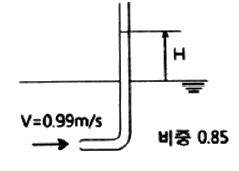
- 50
- 5
- 42
- 4.2
(정답률: 45%)
27. 수조에서 안지름 80mm인 배관으로 20℃ 물이 0.95m3/min 의 유량으로 유입될 때, 5m의 부차적 손실이 발생하였다. 이 때의 부차적 손실계수는 약 얼마인가?
- 7.5
- 8.2
- 9.9
- 11.6
(정답률: 47%)
28. 펌프에서 공동현상이 발생할 때 나타나는 현상이 아닌 것은?
- 소음과 진동 발생
- 양정곡선 저하
- 효율곡선 증가
- 펌프 깃의 침식
(정답률: 78%)
29. 안지름이 50mm인 옥내소화전 배관으로 분당 0.26m3의 물이 흐른다. 이 때 물 속의 압력이 392kPa라면 기준면에서 20m 위에 있는 이 배관 속의 물이 갖는 전 수두는 약 몇 m 인가?
- 24.9
- 32.8
- 44.3
- 60.2
(정답률: 45%)
30. 탱크 안의 물의 압력을 수은 마노미터를 이용하여 측정하였더니 수은주의 높이가 500mm이었다. 대기압이 100kPa일 때 탱크안의 물의 절대압력은 약 몇 kPa인가? (단, 수은의 비체적은 7.35×10-5m3/kg이다)
- 154.2
- 160.2
- 166.7
- 174.5
(정답률: 46%)
31. 15℃의 방에 설치된 길이 50cm, 지름 6mm인 저항선으로부터 50W의 열이 대류 열전달에 의하여 공기로 전달된다. 대류 열전달계소가 150W(m2.K)라고 하면 저항선의 표면온도는 약 몇 ℃인가?
- 50.4
- 61.5
- 74.8
- 89.6
(정답률: 31%)
32. 어떤 관 속의 정압(절대압력)은 294kPa, 온도는 27℃, 공기의 기체상수는 287J/(kg.K)일 경우, 안 지름 250mm인 관 속을 흐르고 있는 공기의 평균 유속이 50m/s이면 공기는 매초 약 몇 kg이 흐르는가?
- 8.4
- 9.5
- 10.7
- 12.5
(정답률: 36%)
33. 웨버수(Weber number)의 물리적 의미를 옳게 나타낸 것은?
- 관성력/표면장력
- 관성력/중력
- 표면장력/관성력
- 중력/관성력
(정답률: 61%)
34. 액체에 지름이 아주 가는 유리관이나 빨대를 넣었을 때, 액체가 상승 또는 하강하는 높이와 관련하여 옳은 것은?
- 지름이 클수록 액체가 상승(하강)하는 높이는 커진다
- 표면장력이 클수록 액체가 상승(하강)하는 높이는 커진다
- 액체의 밀도가 클수록 액체가 상승(하강)하는 높이는 커진다
- 액체가 상승(하강)하는 높이는 중력가속도의 크기와는 무관하다
(정답률: 59%)
35. 안지름 50mm의 관에 기름이 2.5m/s의 속도로 흐를 때 관마찰계수는? (단, 기름의 동점성계수는 1.31×10-4m2/s이다)
- 0.0067
- 0.0671
- 0.012
- 0.025
(정답률: 61%)
36. 동력이 24.3kW인 소화펌프로 지하 5m에 있는 소화수를 지상으로부터 40m의 높이에 있는 물탱크까지 분당 1.5 m3로 올리는 경우 사용된 소화펌프의 효율은 약 얼마인가? (단. 관로의 전 손실수두는 9m이며 펌프의 전달계수는 1.1이다)
- 55%
- 60%
- 65%
- 70%
(정답률: 55%)
37. 단면적이 0.01m2인 옥내소화전 노즐로 그림과 같이 7m/s로 움직이는 벽에 수직으로 물을 방수할 때 벽이 받는 힘은 약 몇 kN인가?
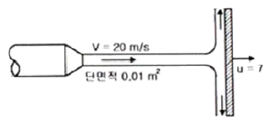
- 1.42
- 1.69
- 1.85
- 2.14
(정답률: 59%)
38. 그림과 같이 비중량이
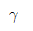
인 유체에 잠겨있고 면적이 A인 평면에 작용하는 힘은?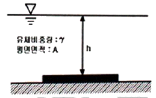
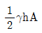
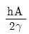
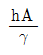
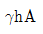
(정답률: 69%)
39. 유체의 정의를 설명할 때 ( )안에 가장 알맞는 용어는?
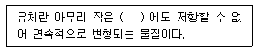
- 관성력
- 전단응력
- 압력
- 중력
(정답률: 72%)
40. 동점성계수와 비중이 각각 0.003m2/s, 1,2일 때 이 액체의 점성계수는 약 몇 N.s/m2 인가?
- 2.2
- 2.8
- 3.6
- 4.0
(정답률: 62%)
3과목: 소방관계법규
41. 위험물안전관리법상 위험물 제조소등의 관계인은 당해 제조소등의 용도로 폐지한 때에는 용도를 폐지한 날부터 며칠 이내에 시 도지사에게 신고하여야 하는가?
- 7일
- 14일
- 21일
- 30일
(정답률: 63%)
42. 보일러 등의 위치 구조 및 관리와 화재 예방을 위하여 불의 사용에 있어서 지켜야 하는 사항 중 난로의 연통은 천장으로부터 최소 몇 m 이상 떨어지게 설치하여야 하는가?
- 0.3
- 0.6
- 1
- 2
(정답률: 58%)
43. 소방본부 종합상황실의 실장이 서면 모사전송 또는 컴퓨터통신 등으로 국민안전처 종합 상황실에 보고하여야 하는 화재의 기준이 아닌 것은?
- 이재민이 100인 이상 발생한 화재
- 사망자가 3인 이상 발생하거나 사상자가 5인이상 발생한 화재
- 재산피해액이 50억원 이상 발생한 화재
- 층수가 5층 이상이거나 병상이 30개 이상인 요양소에서 발생한 화재
(정답률: 66%)
44. 화재예방, 소방시설 설치 유지 및 안전관리에 관한 법률상 1년 이하의 징역 또는 1000만원 이하의 벌금에 처하는 경우는?
- 소방용품의 형식승인을 받지 아니하고 소방용품을 제조하거나 수입한 자
- 형식승인을 받은 그 소방용품에 대하여 제품검사를 받지 아니한 자
- 거짓이나 그 밖의 부정한 방법으로 제품검사 전문기관으로 지정을 받은 자
- 형식승인의 변경승인을 받지 아니한 자
(정답률: 32%)
45. 연소우려가 있는 건축물의 구조에 대한 기준으로 다음 ( )안에 알맞은 것은?
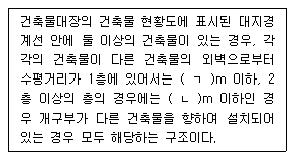
- ㄱ : 6, ㄴ : 10
- ㄱ : 10, ㄴ : 6
- ㄱ : 3, ㄴ : 5
- ㄱ : 5, ㄴ : 3
(정답률: 62%)
46. 제조소등의 설치허가 등에 있어서 최저의 기준이 되는 위험물의 지정수량이 100 kg인 위험물의 품명이 바르게 연결된 것은?
- 브롬산염류 - 질산염류 = 요오드산염류
- 칼륨 - 나트륨 - 알칼알루미늄
- 황화린 - 적린 - 유황
- 과염소산 - 과산화수소 - 질산
(정답률: 62%)
47. 국민안전처장관 또는 시 도지사가 처분을 실시하기 위한 청문대상이 아닌 것은?
- 소방시설관리사 자격의 정지
- 소방안전관리자 자격의 취소
- 소방시설관리업의 등록취소
- 소방용품의 형식승인 취소
(정답률: 63%)
48. 위험물안전관리법령상 자체소방대를 설치하는 제조소 또는 일반취급소에서 취급하는 제4류 위험물의 최대수량의 합이 지정수량의 24만배이상 48만배 미만인 사업소의 관계인이 두어야 하는 화학소방자동차와 자체소방대원의 수의 기준으로 옳은 것은? (단, 화재 그 밖의 재난발생시 다른 사업소등과 상호응원에 관한 협정을 체결하고 있는 사업소는 제외한다.)
- 화학소방자동차 - 2대, 자체소방대원의수 - 10인
- 화학소방자동차 - 3대, 자체소방대원의수 - 10인
- 화학소방자동차 - 3대, 자체소방대원의수 - 15인
- 화학소방자동차 - 4대, 자체소방대원의수 - 20인
(정답률: 66%)
49. 분말형태의 소화약제를 사용하는 소화기의 내용연수로 옳은 것은? (단, 소방용품의 성능을 확인받아 그 사용기한을 연장하는 경우는 제외한다.)
- 10년
- 7년
- 5년
- 3년
(정답률: 74%)
50. 소방기술자의 배치기준 중 중급기술자 이상의 소방기술자(기계분야 및 전기분야 소방시설공사 현장의 기준으로 틀린 것은?
- 지하층을 포함한 층수가 16층 이상 40층 미만인 특정소방대상물의 공사 현장
- 연면적 5000m2 이상, 30000m2 미만인 특정소방대상물 (아파트는 제외) 의 공사 현장
- 연면적 10000m2 이상, 200000m2 미만인 아파트의 공사현장
- 물분무등 소화설비(호스릴방식의 소화설비는 제외) 또는 제연설비가 설치되는 특정소방대상물의 공사현장
(정답률: 35%)
51. 대통령령으로 정하는 화재경계지구의 지정대상지역이 아닌 것은?
- 시장지역
- 목조건물이 밀집한 지역
- 위험물의 저장 및 처리시설이 밀집한 지역
- 석유화학제품을 판매하는 시설이 있는 지역
(정답률: 68%)
52. 소방기본법상 벌칙 기준 중 100만원이하의 벌금에 해당하는 자가 아닌 것은?
- 화재경계지구 안의 소방대상물에 대한 소방특별조사를 거부 방해 또는 기피한 자
- 정당한 사유 없이 소방대의 생활안전활동을 방해한 자
- 화재 발생을 막거나 폭발 등으로 화재가 확대되는 것을 막기 위하여 가스 전기 또는 유류 등의 시설에 대하여 위험물질의 공급을 차단하는 등 필요한 조치를 정당한 사유 없이 방해한 자
- 타고남은 불 또는 화기가 있을 우려가 있는 재의 처리 명령을 정당한 사유 없이 따르지 아니하거나 이를 방해한 자
(정답률: 44%)
53. 소방기본법령상 대통령령으로 정하는 특수가연물의 품명별 수량기준이 옳은 것은?
- 가연성고체류 - 1000kg 이상
- 목재가공품 및 나무부스러기 - 20m3 이상
- 석탄 목탄류 - 3000kg 이상
- 면화류 200kg 이상
(정답률: 76%)
54. 소방특별조사 결과 소방대상물의 개수 이전 제거 명령으로 인하여 손실을 입은 자가 있는 경우 손실을 보상하여야 하는 자는?(관련 규정 개정전 문제로 여기서는 기존 정답인 1번을 누르면 정답 처리됩니다. 자세한 내용은 해설을 참고하세요.)
- 국민안전처 장관
- 대통령
- 소방본부장
- 소방서장
(정답률: 71%)
55. 위험물안전관리법령상 위험물 및 지정 수량에 대한 기준 중 다음 ( ) 안에 알맞은 것은?
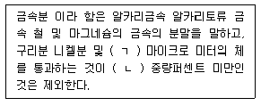
- ㄱ : 150, ㄴ : 50
- ㄱ : 53, ㄴ : 50
- ㄱ : 50, ㄴ : 150
- ㄱ : 50, ㄴ : 53
(정답률: 68%)
56. 하자를 보수하여야 하는 소방시설과 소방시설별 하자보수 보증기간이 틀린 것은?
- 자동소화장치 : 3년
- 자동화재탐지설비 : 2년
- 무선통신보조설비 : 2년
- 간이스프링클러설비 : 3년
(정답률: 70%)
57. 소방시설 중 경보설비가 아닌 것은?
- 통합감시시설
- 가스누설경보시
- 자동화재속보설비
- 비상콘센트설비
(정답률: 78%)
58. 특정소방대상물의 건축 대수선 용도변경 또는 설치 등을 위한 공사를 시공하는 자가 공사현장에서 인화성 물품을 취급하는 작업 등 대통령령으로 정하는 작업을 하기 전에 설치하고 유지 관리하는 임시소방시설의 종류가 아닌 것은? (단, 용접 용단 등 불꽃을 발생시키거나 화기를 취급하는 작업이다)
- 간이소화장치
- 비상경보장치
- 자동확산소화기
- 간이피난유도선
(정답률: 56%)
59. 지진이 발생할 경우 소방시설이 정상적으로 작동할 수 있도록 대통령령으로 정하는 소방시설의 내진설계 대상이 아닌 것은?
- 옥내소화전 설비
- 스프링클러설비
- 물분무등소화설비
- 제연설비
(정답률: 65%)
60. 과태료의 부과기준 중 특수가연물의 저장 및 취급 기준을 2회 위반한 경우의 과태료 금액으로 옳은 것은?
- 50만원
- 100만원
- 150만원
- 200만원
(정답률: 38%)
4과목: 소방기계시설의 구조 및 원리
61. 차고 주차장에 설치하는 포소화전설비의 설치기준으로 옳은 것은?
- 저발포의 소화약제를 사용할 수 있는 것으로 할 것
- 호스를 포소화전방수구로 분리하여 비치하는 때에는 그로부터 1.5m 이내의 거리에 호스함을 설치할 것
- 호스함은 바닥으로부터 높이 1m 이하의 위치에 설치하고 그 표면에는 포소화전 함이라고 표시한 표지와 적색의 위치표시등을 설치할 것
- 방호대상물의 각 부분으로부터 하나의 포소화전방수구까지의 수평거리는 15m 이하가 되도록 하고 소화의 길이는 방호대상물의 각 부분에 포가 유효하게 뿌려질 수 있도록 할 것
(정답률: 31%)
62. 분말소화설비에 사용하는 소화약제 중 제3종 분말의 주성분으로 옳은 것은?
- 인산염
- 탄산수소칼륨
- 탄산수소나트륨
- 요소
(정답률: 80%)
63. 옥내소화설비의 압력수조를 이용한 가압송수장치에 있어서 압력수조에 설치하는 것이 아닌 것은?
- 급기관
- 압력계
- 오버플로우관
- 자동식 공기압축기
(정답률: 66%)
64. 스프링클러설비 배관에 설치되는 행가의 설치기준 중 다음 ( ) 안에 알맞은 것으로 연결된 것은?
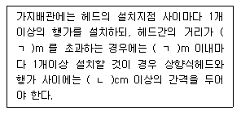
- ㄱ : 3.5, ㄴ : 6
- ㄱ : 4.5, ㄴ : 6
- ㄱ : 3.5, ㄴ : 8
- ㄱ : 4.5, ㄴ : 8
(정답률: 40%)
65. 소화수조의 소요수량이 20m3이상 40m3 미만일 때 사압송수장치의 1분당 양수량은 최소 몇 L 이상이어야 하는가? (단, 수화수조가 지표면으로부터의 깊이(수조 내부바닥가지의 길이)가 4.5m 이상인 지하에 있는 경우이다.)
- 1100
- 2200
- 3300
- 4400
(정답률: 43%)
66. 화재조기진압용 스프링클러설비를 설치할 장소의 구조기준으로 틀린 것은?
- 해당층의 높이가 13.7m 이하일 것
- 천장의 기울기가 1000분의 168을 초과하지 않아야 하고 이를 초과하는 경우에는 반자를 지면과 수평으로 설치할 것
- 천장은 평평하여야 하며 철재나 목재의 돌출부분이 102mm를 초과하지 아니할 것
- 보로 사용되는 목재 콘트리트 및 철재사이의 간격이 0.8m 이상 1.5m 이하일 것
(정답률: 58%)
67. 개방형헤드를 사용하는 연결살수설비에 있어서 하나의 송수구역에 설치하는 살수헤드의 수는 최대 몇 개 이하가 되도록 하여야 하는가?
- 8
- 10
- 16
- 32
(정답률: 58%)
68. 스프링클러설비를 설치하여야 할 특정 소방 대상물에 있어서 스프링클러헤드를 설치하지 아니할 수 있는 기준으로 틀린 것은?
- 천장 및 반자가 불연재로 외의 것으로 되어 있고 천장과 반자사이의 거리가 1m 미만인 부분
- 천장과 반자 양쪽이 불연재료로 되어 있는 경우로서 천장과 반자사이의 거리가 2m 미만인 부분
- 천장 반자 중 한쪽이 불연재료로 되어있고 천장과 반자사이의 거리가 1m 미만인 부분
- 현관 또는 로비 등으로서 바닥으로부터 높이가 20m 이상인 장소
(정답률: 42%)
69. 소화약제 외의 것을 이용한 간이소화용구의 능력단위 중 다음 ( ) 안에 알맞은 것으로 연결된 것은?
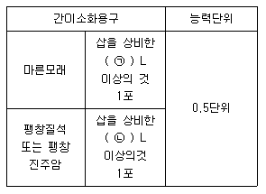
- ㉠ 30, ㉡ 50
- ㉠ 50, ㉡ 30
- ㉠ 80, ㉡ 50
- ㉠ 50, ㉡ 80
(정답률: 63%)
70. 화재시 현저하게 연기가 찰 우려가 없는 장소로서 호스릴할로겐화합물소화설비를 설치할 수 있는 장소기준으로 틀린 것은?
- 지상 1층 및 피난층에 있는 부분으로서 지상에서 수동 또는 원격조작에 따라 개방할 수 있는 개구부의 유효면적의 합계가 바닥 면적의 15% 이상이 되는 부분
- 전기설비가 설치되어 있는 부분의 바닥면적이 해당 설비가 설치되어 있는 구획의 바닥면적의 5분의 1 미만이 되는 부분
- 다량의 화기를 사용하는 부분 (해당 설비의 주의 5m 이내의 부분을 포함)의 바닥면적이 해당 설비가 설치되어 있는 구획의 바닥면적의 5분의1 미만이 되는 부분
- 옥외로 통하는 개구부가 상시 개방괸 구조의 부분으로서 그 개방된 부분의 합계면적이 해당 차고 또는 주차장의 바닥면적의 15% 이상인 부분
(정답률: 46%)
71. 소방대상물 주변의 설치된 벽면적의 합계가 20m2, 방호공간의 벽면적 합계가 50m2, 방호공간 체적이 30m2 인 장소에서 국소방출방식의 분말 소화설비를 설치할 때 저장할 소화약제량은 약 몇 kg 인가? (단, 소화약제의 종별에 따른 X,Y의 수치에서 X의 수치는 5.2, Y의 수치는 3.9로 하며 여유율(K)는 1.1로 한다)
- 120
- 199
- 314
- 349
(정답률: 27%)
72. 다음 중 지하층이나 무장층 또는 밀폐된 거실로서 그 바닥면적이 20m2 미만의 장소에 설치할 수 있는 소화기구는? (단, 배기를 위한 유효한 개구부가 없는 장소인 경우이다.)(관련 규정 개정전 문제로 여기서는 기존 정답인 2번을 누르면 정답 처리됩니다. 자세한 내용은 해설을 참고하세요.)
- 이산화탄소를 방하사는 소화기구
- 할론 1301을 방사하는 소화기구
- 할론 1211을 방사하는 소화기구
- 할론 2402를 방사하는 소화기구
(정답률: 57%)
73. 다음의 청정소화약제 중 기본성분이 다른 것은?
- HCFC BLEND A
- HFC-125
- IG-541
- HFC-277ea
(정답률: 75%)
74. 스프링클러설비의 배관의 설치기준 중 다음 ( ) 안에 알맞은 것으로 연결된 것은?
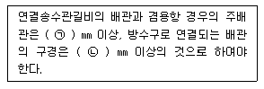
- ㉠ 65, ㉡ 80
- ㉠ 65, ㉡ 100
- ㉠ 100, ㉡ 65
- ㉠ 100, ㉡ 80
(정답률: 72%)
75. 미분무소화설비 용어의 정의 중 다음 ( )안에 알맞은 것은?
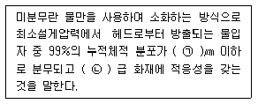
- ㉠ 200, ㉡ B,C
- ㉠ 400, ㉡ B,C
- ㉠ 200, ㉡ A,B,C
- ㉠ 400, ㉡ A,B,C
(정답률: 65%)
76. 호스릴이산화탄소소화설비 하나의 노즐에 대하여 저장량은 최소 몇 kg이상이어야 하는가?
- 60
- 70
- 80
- 90
(정답률: 33%)
77. 연결송수관설비의 방수용기구함 설치기준 중 다음 ( )안에 알맞은 것은?
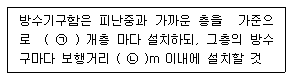
- ㉠ 2, ㉡ 3
- ㉠ 3, ㉡ 5
- ㉠ 3, ㉡ 2
- ㉠ 5, ㉡ 3
(정답률: 63%)
78. 특정 소방대상물의 용도 및 장소별로 설치하여야 할 인명구조기구의 설치기준 중 공기호흡기를 층마다 2개이상 비치하여야 할 특정소방대상물의 기준으로 옳은 것은?
- 지하가 중 터널
- 운수시설 중 지하역사
- 판매시설 중 농수산물도매시장
- 문화 및 집회시설 중 수용인원 50명 이상의 영화상영관
(정답률: 53%)
79. 승강식피난기 및 하향식 피난구용 내림식 사다리의 설치기준 중 다음 ( )안에 알맞은 것은?
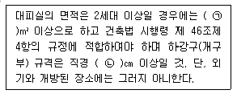
- ㉠ 2 ㉡ 50
- ㉠ 3 ㉡ 50
- ㉠ 2 ㉡ 60
- ㉠ 3 ㉡ 60
(정답률: 37%)
80. 물분무소화설비에 제어반 설치 시 감시제어반과 동력제어반으로 구분하여 설치하지 아니할 수 있는 경우가 아닌 것은?
- 압력수조에 따른 가압송수장치들 하용하는 물분무소화설비
- 고가수조에 따른 가압송수장치를 사용하는 물분무소화설비
- 가압수조에 따른 가압송수장치를 사용하는 물분무소화설비
- 내연기관에 따른 가압송수장치를 사용하는 물분무소화설비
(정답률: 36%)